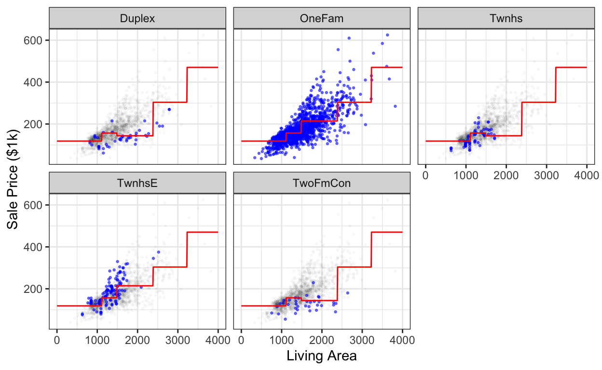
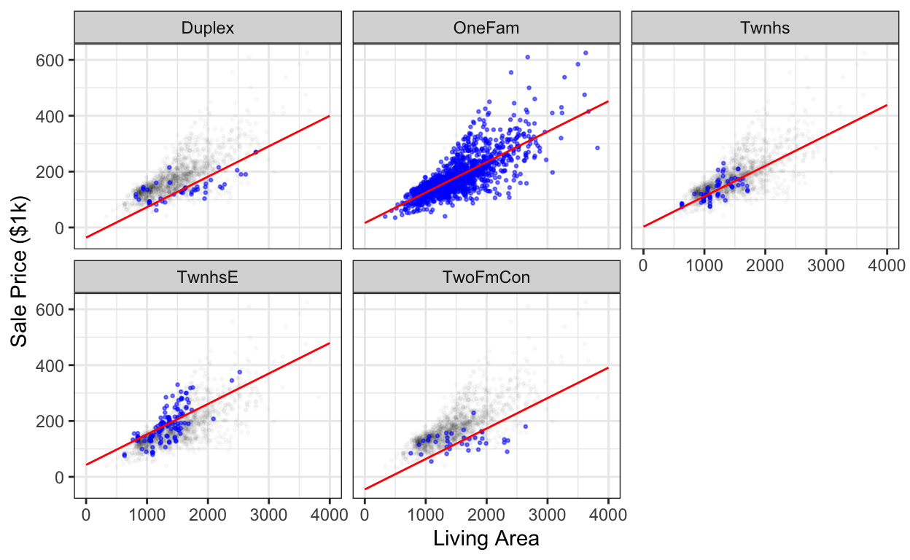

Introduction
The goal of this exercise is to start getting familiar with modeling using decision trees. We’ll try the same regression task that we saw in the slides, and we’ll use a decision tree model just like we did there.
Topics:
- How do decision trees make predictions?
- How do they handle continuous and categorical features?
- How does the tree change when different features are available?
- How does the tree change when the maximum allowed depth changes?
Getting started
We’ll be using the Ames home sales dataset that we saw in the slides If you’re curious, you can look at the Data dictionary that the author provided. In the original paper, the author suggests working with a subset of the data. So let’s do that, and we also change the units of sale price to be in thousands of dollars so the numbers aren’t so huge.
# Get the data from the "modeldata" package, which comes with tidymodels.
ames <- read_builtin("ames", package = "modeldata") %>%
filter(Gr_Liv_Area < 4000, Sale_Condition == "Normal") %>%
mutate(Sale_Price = Sale_Price / 1000)Hold out some unseen data
NOTE: this is exactly the same as what we did last week.
Remember that our goal is to be able to predict what homes will sell for before they’re sold.
But our dataset has only homes that were already sold. How can we possibly figure out how well we’d predict a sale price before it’s sold?
Our strategy, which we’ll discuss more in future weeks, will be to hold out a “testing set” of homes. We won’t let our model see the actual sale price for these homes.
The homes where we do show the model the sale price we’ll call the “training” homes.
We’ll make this split randomly but consistently: we’ll first seed the random number generator so it always gives the same sequence of numbers.
set.seed(1234)
# Split our data randomly
ames_split <- initial_split(ames, prop = 2/3)
ames_train <- training(ames_split)
ames_test <- testing(ames_split)Exercise: Use nrow to verify that the
training set is about two-thirds of the data.
Exercise: Did initial_split shuffle the
data before it split it? Use head() to look at the first
few rows of ames and of the two splits. (The point here is
to look at the results.)
head(ames)
head(ames_train)
head(ames_test)Construct a model specification
As a reminder, the basic tidymodels interface is
fit(model_spec, formula, data)
model_spec: the kind of model we want to fit. We’ll use adecision_treeinregressionmode. We’ll tell it we want trees that are at most 3 levels deep.formula- this goes thing-to-predict
~var1+var2+… - In our case, well use
Gr_Liv_AreaandBldg_Typeto predictSale_Price.
- this goes thing-to-predict
data: we’ll give the tree-builder our training data to use to try to find a good tree.
The result is a model object, which can make predictions for us. We’ll see an example on the next page.
Interpreting Decision-Tree Fitting
decision_tree_fit <- fit(
decision_tree(mode = "regression", tree_depth = 3),
Sale_Price ~ Gr_Liv_Area + Bldg_Type,
data = ames_train)
# First, show the tree textually
decision_tree_fit
# Then, show the tree graphically
decision_tree_fit %>%
extract_fit_engine() %>%
rpart.plot::rpart.plot(roundint = FALSE)To interpret this diagram, remember that a decision tree puts each item (home, in this case) in a bucket. The diagram shows a bubble for each bucket:
- The lower number in the bubble shows the number of items in that bucket (as a percentage of the full training set size).
- The upper number in the bubble shows the average value of the response variable for those items.
Exercises:
- How many groups does the tree divide the data into? Look at the plot above; don’t write any code.
- What would the tree predict for a duplex with 1400 sq ft above-grade
living area (
Gr_Liv_Area)? Do this without writing any code; just look at the tree. - What would the tree predict for a single-family home with 2000 sq ft
above-grade living area (
Gr_Liv_Area)? - Change the tree depth to 5. Did your answers to any of the previous questions change? Why or why not?
- Add some additional features to the model. How does the tree change? Try changing the depth again. How does the tree change now?
Some interesting features might be Year_Built,
Latitude or Longitude, or the number of
Bedroom_AbvGr. Here’s the full list:
names(ames_train) [1] "MS_SubClass" "MS_Zoning" "Lot_Frontage"
[4] "Lot_Area" "Street" "Alley"
[7] "Lot_Shape" "Land_Contour" "Utilities"
[10] "Lot_Config" "Land_Slope" "Neighborhood"
[13] "Condition_1" "Condition_2" "Bldg_Type"
[16] "House_Style" "Overall_Cond" "Year_Built"
[19] "Year_Remod_Add" "Roof_Style" "Roof_Matl"
[22] "Exterior_1st" "Exterior_2nd" "Mas_Vnr_Type"
[25] "Mas_Vnr_Area" "Exter_Cond" "Foundation"
[28] "Bsmt_Cond" "Bsmt_Exposure" "BsmtFin_Type_1"
[31] "BsmtFin_SF_1" "BsmtFin_Type_2" "BsmtFin_SF_2"
[34] "Bsmt_Unf_SF" "Total_Bsmt_SF" "Heating"
[37] "Heating_QC" "Central_Air" "Electrical"
[40] "First_Flr_SF" "Second_Flr_SF" "Gr_Liv_Area"
[43] "Bsmt_Full_Bath" "Bsmt_Half_Bath" "Full_Bath"
[46] "Half_Bath" "Bedroom_AbvGr" "Kitchen_AbvGr"
[49] "TotRms_AbvGrd" "Functional" "Fireplaces"
[52] "Garage_Type" "Garage_Finish" "Garage_Cars"
[55] "Garage_Area" "Garage_Cond" "Paved_Drive"
[58] "Wood_Deck_SF" "Open_Porch_SF" "Enclosed_Porch"
[61] "Three_season_porch" "Screen_Porch" "Pool_Area"
[64] "Pool_QC" "Fence" "Misc_Feature"
[67] "Misc_Val" "Mo_Sold" "Year_Sold"
[70] "Sale_Type" "Sale_Condition" "Sale_Price"
[73] "Longitude" "Latitude" Another way of visualizing trees
The slides use a different kind of plot for trees, but it shows the same information. The code is unfortunately more messy, but you’re welcome to use it.
decision_tree_fit <- fit(
decision_tree(mode = "regression", tree_depth = 3),
Sale_Price ~ Gr_Liv_Area + Bldg_Type,
data = ames_train)
# repair_call needed: https://github.com/tidymodels/tidymodels.org/issues/174
library(partykit)
plot(as.party(repair_call(decision_tree_fit, ames_train)$fit))Evaluating Trees
Let’s see what the model predicts. We’ll use the following model:
tree_1 <- fit(
decision_tree(mode = "regression", tree_depth = 3),
Sale_Price ~ Gr_Liv_Area + Bldg_Type,
data = ames_train)
tree_1parsnip model object
n= 1608
node), split, n, deviance, yval
* denotes terminal node
1) root 1608 8118675.00 175.7534
2) Gr_Liv_Area< 1490.5 899 1218425.00 138.7159
4) Gr_Liv_Area< 1112.5 426 282265.00 118.4952 *
5) Gr_Liv_Area>=1112.5 473 605106.70 156.9273 *
3) Gr_Liv_Area>=1490.5 709 4103310.00 222.7163
6) Gr_Liv_Area< 2381 618 2287344.00 208.6234
12) Bldg_Type=TwoFmCon,Duplex,Twnhs 50 42334.83 143.9380 *
13) Bldg_Type=OneFam,TwnhsE 568 2017383.00 214.3176 *
7) Gr_Liv_Area>=2381 91 859663.00 318.4243
14) Gr_Liv_Area< 3225 83 573069.00 303.7881 *
15) Gr_Liv_Area>=3225 8 84344.74 470.2750 *We’ll compare it against this linear regression model (note how the code is almost identical):
linreg_1 <- fit(
linear_reg(),
Sale_Price ~ Gr_Liv_Area + Bldg_Type,
data = ames_train)We can use the same augment workflow that we used with
linear regression:
tree_1_predictions <- augment(tree_1, ames_train)
linreg_1_predictions <- augment(linreg_1, ames_train)Let’s see what values the model predicted. Make a
histogram of the predicted values (which are stored in the
.pred variable). Use bins = 100 or
even more.
ggplot(tree_1_predictions, ___) + ___How many (non-zero) vertical bars do you see? How many bars
would you expect to see in light of what you saw about the model’s
internals earlier? Note the *s in the textual
description of the model above.
How does this histogram compare with what you’d get from the
linreg_1_predictions?
Plotting Predictions in “Data Space”
Here’s some plots we made in the slides; I don’t expect you to use this code yourself because in general our models will have too many features to be able to make a plot like this. But I think it’s helpful for getting an intuition about what the model is doing.
sweep_model <- function(model, ...) {
X <- expand_grid(...)
model %>%
predict(X) %>%
bind_cols(X)
}
ggplot(ames_train, aes(x = Gr_Liv_Area, y = Sale_Price)) +
geom_point(data = select(ames_train, -Bldg_Type), size = .5, alpha = .025) +
geom_point(alpha = .5, size = .5, color = "blue") +
geom_line(data = sweep_model(
tree_1,
Gr_Liv_Area = seq(0, 4000, length.out = 500),
Bldg_Type = levels(ames_train$Bldg_Type)
),
mapping = aes(y = .pred),
color = "red") +
facet_wrap(vars(Bldg_Type)) +
labs(x = "Living Area", y = "Sale Price ($1k)")
Compare this with the linear regression model:
ggplot(ames_train, aes(x = Gr_Liv_Area, y = Sale_Price)) +
geom_point(data = select(ames_train, -Bldg_Type), size = .5, alpha = .025) +
geom_point(alpha = .5, size = .5, color = "blue") +
geom_line(data = sweep_model(
linreg_1,
Gr_Liv_Area = seq(0, 4000, length.out = 500),
Bldg_Type = levels(ames_train$Bldg_Type)
),
mapping = aes(y = .pred),
color = "red") +
facet_wrap(vars(Bldg_Type)) +
labs(x = "Living Area", y = "Sale Price ($1k)")
How would you describe, intuitively, the difference between the two models?
Evaluating Predictions Quantitatively
In light of the previous section, which model do you think will have a lower MAE?
Here’s the code for computing the MAE of our linear regression model. Modify it to compute the MAE of both models.
linreg_1_predictions %>%
mutate(error = Sale_Price - .pred) %>%
summarize(mean(abs(error)))Appendix
To run any code chunk from this tutorial in your own environment, use:
library(tidyverse)
library(tidymodels)
theme_set(theme_bw())
options(scipen = 5) # encourage metrics to print in fixed-point notation
options(dplyr.summarise.inform = FALSE) # silence a warning message
# Get the data from the "modeldata" package, which comes with tidymodels.
ames <- read_builtin("ames", package = "modeldata") %>%
filter(Gr_Liv_Area < 4000, Sale_Condition == "Normal") %>%
mutate(Sale_Price = Sale_Price / 1000)
set.seed(1234)
# Split our data randomly
ames_split <- initial_split(ames, prop = 2/3)
ames_train <- training(ames_split)
ames_test <- testing(ames_split)
tree_1 <- fit(
decision_tree(mode = "regression", tree_depth = 3),
Sale_Price ~ Gr_Liv_Area + Bldg_Type,
data = ames_train)
tree_1
linreg_1 <- fit(
linear_reg(),
Sale_Price ~ Gr_Liv_Area + Bldg_Type,
data = ames_train)
tree_1_predictions <- augment(tree_1, ames_train)
linreg_1_predictions <- augment(linreg_1, ames_train)